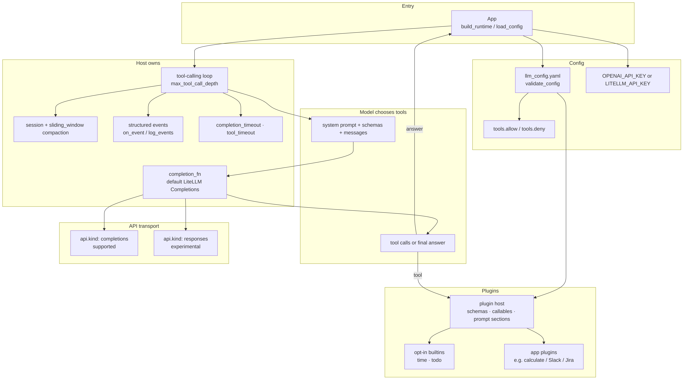

llm-platform
A capability-agnostic LLM tool-calling runtime with a plugin host.
The problem
Most tool-calling apps bury Slack, Jira, or calc logic inside the same module that runs the model loop, so the next product copies half a host by accident.
I needed a reusable solver that owns completion, session, compaction, and plugin composition, while each app owns which capabilities load and how the product UI looks. What was missing was a host extracted from a real app (slack-search) that stays agnostic about domains and still runs a disciplined tool loop.
Why I built it
Day to day, I wanted to define a capability once as a plugin, load it from YAML in whichever app needed it, and keep the same runtime across local projects via editable install.
A Python package was enough for that. Apps call build_runtime(load_config()). The host runs the loop. Plugins supply schemas, callables, and optional prompt sections.
What I built
llm-platform is a generic tool-calling runtime. The package owns the completion path (injected completion_fn, default LiteLLM Completions), session handling, sliding-window compaction, timeouts, structured events, tool allow and deny lists, YAML config validation, and a plugin host. Apps own capabilities and product UI. Opt-in builtins cover time and todo (session-scoped). Domain APIs such as Slack and Jira stay in the app, not in builtins.
You install with pip install -e /path/to/llm-platform (Python 3.10+), point at llm_config.yaml or LLM_CONFIG_PATH, and call runtime.query(...). Sample apps under sample_apps/simple and sample_apps/complex show a no-plugin math path and an app-local calculate plugin. Status is local multi-project use via editable install; it is not positioned as a multi-tenant production platform. Completions is supported; Responses (api.kind: responses) is experimental.
Three decisions
These are the craft bets I would defend in a design review, each one about ownership, who chooses tools, or which transport is allowed to be the default.
1. Host, plugin, and app stay separate.
The host assembles the prompt, calls the model, executes tools, manages session and compaction, and enforces depth and timeout limits. A plugin is one problem class: schemas, callables, and an optional system_prompt_section(). The app chooses which plugins to load and owns product UI. I was counting on domain logic living in plugins and apps so the next product does not fork the solver. That split is why the same package can power sample_apps/simple and a Slack-shaped host without rewriting the loop.
2. The model chooses tools from schemas.
The host sends system prompt, tool schemas, and session messages. If the model returns tool calls, the host runs them and continues until a normal answer or max_tool_call_depth. The host does not pick tools in application code. I was counting on schemas and prompt sections as the control surface, because the failure I care about is a hardcoded if-ladder that reimplements routing the model already does. Allow and deny lists still filter what is loaded; they do not replace model selection with host guesswork.
3. Completions is the supported default; Responses stays experimental.
api.kind: completions is the supported transport. api.kind: responses maps Completions-shaped sessions through litellm.responses with function tools only, and the README marks it experimental. The bet was that a reusable host needs one path peers can trust in local apps first. Experimenting with Responses is fine behind a config flag; shipping it as the default would oversell stability the status table does not claim.
Proof
You can follow the same paths from the public README and HOWTO.md.
from llm_platform import configure_litellm_api_key, load_config, build_runtime
configure_litellm_api_key()
runtime = build_runtime(load_config())
print(runtime.query("Hello"))
Minimal config shape from the README:
model: openai/gpt-4.1-2025-04-14 plugins: [] max_tool_call_depth: 3 api: kind: completions
From the public repo you can also confirm: plugin registration via @register_plugin, builtins time / todo, validate_config, structured events (turn.start, tool.call, and related), sample apps under sample_apps/, and the status table for Completions versus experimental Responses.

Why I built it this way
These boundaries are the same ones I hold when more than one product needs a tool loop: clear ownership, a model-driven schema surface, and a default transport I am willing to support.
I keep the host free of domain tools so plugins stay swappable. I let the model choose from schemas so routing stays in the prompt contract. I keep Completions as the supported default so local apps have a stable path while Responses stays labeled experimental. If you are going to reuse a solver across projects, the split between host, plugin, and app should still be something you can draw on a whiteboard.